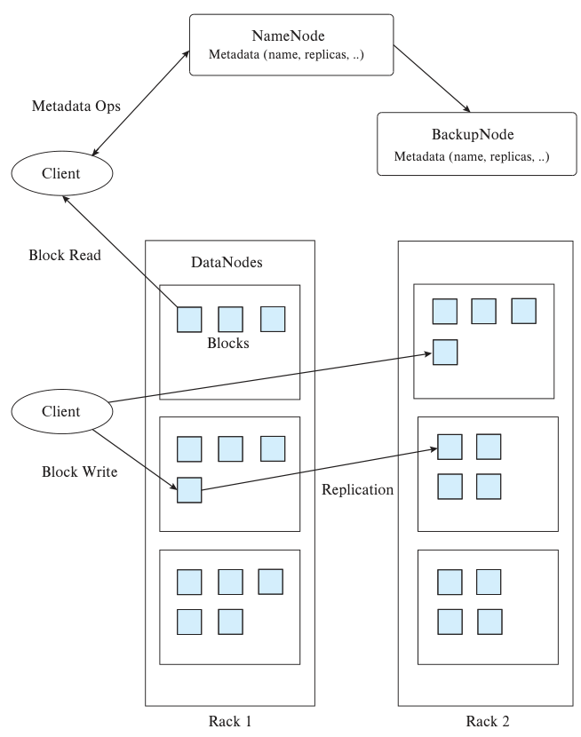
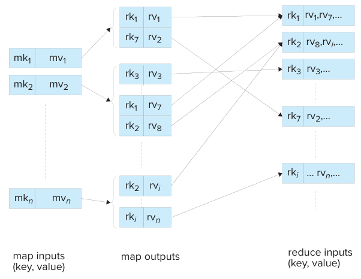
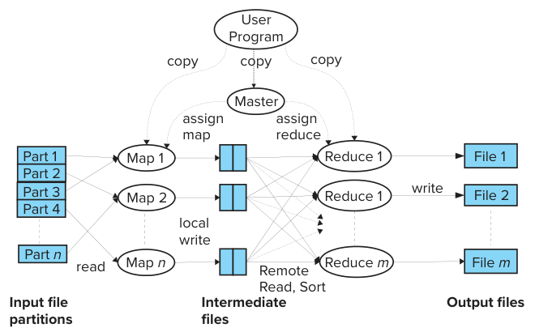
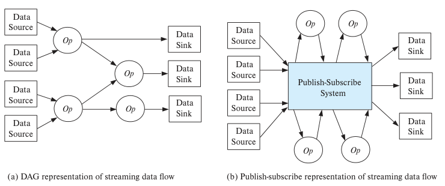

第10章 大数据
关系数据库的传统应用以结构化数据为基础，处理单个企业的数据。现代数据管理应用经常需要处理关系形式以外的数据；同时，其数据量也远远超过单个企业所能产生的数据量。本章研究管理这类数据的技术，这类数据通常称为大数据（Big Data）。
10.1 背景与动机
20世纪90年代和21世纪头十年，万维网的发展带来了新的数据存储和查询需求，其数据量远远超过关系数据库原本面向的企业数据规模。早期网页上用户可见的数据大多是静态的，但网站会产生大量访问记录，包括哪些用户访问了网站、访问了哪些网页，以及何时访问。这些数据通常以文本形式保存在Web服务器的日志文件中。网站管理者很快认识到，Web日志中蕴含着丰富的信息，企业可以借此加深对用户的了解，并向用户定向投放广告和开展营销活动。这类信息包括用户访问过哪些页面，还可以与许多网站收集的用户画像数据关联，例如年龄、性别和收入水平。购物网站等交易型网站还有其他类型的数据，例如用户浏览或购买过哪些产品。21世纪头十年，用户生成的数据量增长迅猛，社交媒体数据的增长尤为突出。
这类数据的规模很快超出了传统数据库系统的处理能力，存储和处理都需要高度并行。同时，许多数据采用日志记录这样的文本形式，或第8章介绍的其他半结构化形式。这类数据以规模、生成速度和格式多样性为特征，统称为大数据。
大数据与传统关系数据库的区别通常从以下指标衡量：
- 数据量（Volume）：需要存储和处理的数据量，远远超过传统数据库的设计处理规模，传统并行关系数据库也包括在内。并行数据库系统虽然已有很长的历史，但早期系统通常面向几十台到几百台机器。某些新应用则需要数千台机器并行存储和处理数据。
- 速度（Velocity）：如今的网络环境中，数据到达速率远高于过去。数据管理系统必须能够高速接收和存储数据。此外，许多应用需要在数据项到达时立即处理，以便及时发现某些事件并作出响应，这类系统称为流数据系统。对如今的许多应用而言，处理速度十分重要。
- 多样性（Variety）：在过去几十年中，关系型数据表示、关系查询语言和关系数据库系统取得了成功，构成大多数组织数据表示的基础。不过，显然并非所有数据都是关系型数据。
正如第8章所述，如今不同用途会采用不同的数据表示。许多数据可以用关系形式高效表示，但也有许多数据源提供其他形式的数据，例如半结构化数据、文本数据和图数据。SQL查询语言适于表达关系数据上的各类查询，也已扩展到支持半结构化数据。然而，许多计算难以用SQL表达，或者即使用SQL表达，也难以高效执行。
为了表达并高效执行新型数据上的复杂查询，人们开发了新一代语言和框架。
本书在广义上使用“大数据”一词，指任何需要高度并行才能处理的数据处理需求，无论其数据是否采用关系形式。
过去十年中，人们开发了多种大数据存储与处理系统。这些系统使用庞大的机器集群，包含数千台，有时甚至数万台机器。集群中的一台机器通常称为一个节点（node）。
10.1.1 大数据的来源与用途
20世纪90年代末和21世纪初，Web的迅速发展推动了数据量的巨大增长。最初的数据来自Web服务器软件的日志，日志记录用户与Web服务器的交互。数亿用户每天各自点击多个链接，后来用户规模又增长到数十亿，大型互联网公司发现自己每天都会产生数TB的数据。这些公司很快认识到，Web日志中有许多重要信息，可以用于多种目的，例如：
- 决定向哪些用户展示哪些帖子、新闻和其他信息，以提高用户对网站的参与度。用户此前浏览过的内容，以及偏好相似的其他用户浏览过的内容，是作出这些决定的重要依据。
- 决定向哪些用户展示哪些广告，尽量提高广告主的收益，同时使用户看到的广告更可能与其相关。用户访问过哪些页面、此前点击过哪些广告，同样是作出这些决定的重要依据。
- 决定网站如何组织，方便大多数用户找到所需的信息。用户通常会访问哪些页面，以及访问某一页面后通常接着浏览哪个页面，是作出这些决定的重要依据。
- 根据页面浏览情况判断用户偏好和趋势，帮助制造商或销售商决定哪些商品应增加生产或库存，哪些应减少生产或库存。这属于更广泛的商业智能领域。
- 获取广告展示和点击信息。点击（click-through）指用户点击广告以获取更多信息，可用于衡量广告吸引用户注意力的效果。转化（conversion）指用户实际购买所宣传的产品或服务。网站往往在发生点击或转化时获得报酬。不同广告的点击率和转化率因而成为网站决定展示哪些广告的重要指标。
如今，还有许多其他来源会产生海量数据，例如：
- 移动应用产生的数据，可用于了解用户与应用的交互，其作用类似于网站点击数据之于用户与网站的交互。
- 零售企业的交易数据，包括线上与线下交易。沃尔玛等大型零售连锁企业很早就开始使用海量数据。早在Web出现之前，它们就已采用并行数据库系统管理和分析数据。
- 传感器数据。如今，高端设备通常配备大量传感器来监测设备的健康状态。集中收集这类数据，有助于跟踪状态、预测设备出现问题的可能性，并在问题造成故障之前予以修复。传感器的使用日益普及，传感器以及嵌入车辆、建筑、机械等物体的其他计算设备也越来越多地接入互联网，这通常称为物联网（internet of things）。这类联网设备的数量现已超过互联网上的用户人数。
- 通信网络的元数据，包括数据网络的流量及其他监测信息，以及语音网络的通话信息。这类数据有助于提前发现潜在问题、及时发现已经发生的问题，并为容量规划及其他相关决策提供依据。
早在“大数据”这一术语出现之前，数据库中存储的数据量就已经快速增长了数十年。但Web的迅猛发展形成了一个转折点：主要网站需要处理数亿乃至数十亿用户产生的数据，规模远超此前的大多数应用。
即使业务与Web无关的公司，也发现自己需要处理海量数据。许多公司购买并分析其他公司生成的大量数据。例如，许多公司可以获得附有用户画像信息的Web搜索历史，用这些信息作出各种业务决策，包括规划广告活动、确定生产哪些产品及何时生产等。
如今，公司发现利用社交媒体数据辅助业务决策已十分必要。Twitter等社交媒体网站上，可以找到人们对公司新产品发布或现有产品与服务调整的反应。Twitter这类网站的数据量很大，到达速度也很高，需要迅速分析并作出响应。例如，公司投放一则广告后，若Twitter上出现强烈的负面反应，公司会希望迅速发现问题，并可能在造成过大损害之前停止使用该广告。大数据已经成为许多组织开展各类活动的重要支撑。
10.1.2 查询大数据
SQL是迄今查询关系数据库使用最广泛的语言。大数据应用需要处理更多样的数据类型，并扩展到极大的数据量和极高的数据速率，因而有更丰富的查询语言可供选择。
要构建能够应对大数据量和高数据速率的数据管理系统，必须并行存储和处理数据。构建一个关系数据库，使其既支持SQL、事务等数据库功能（事务将在第17章介绍），又能通过大量机器协同运行获得很高的性能，并非易事。这类应用分为两类：
- 需要极高可扩展性的事务处理系统。 事务处理系统支持大量执行时间较短的查询和更新。
如果放宽对关系数据库完整功能的支持要求，面向事务处理的数据库就更容易扩展到大量机器。相应地，许多需要应对极大数据量和极高数据速率的事务处理应用，也可以在缺少完整数据库支持的条件下运行。
这类应用主要通过关联键保存数据，再使用该键取回数据；这样的存储系统称为键值存储（key-value store）。在前面的用户画像示例中，用户画像数据的键就是用户标识符。有些应用在概念上需要连接操作，但通过应用代码或某种视图物化方式实现连接。
例如，在社交网络应用中，用户连接系统后，应看到所有好友的新帖子。如果帖子和好友数据采用关系形式存储，就需要执行连接。假设系统改为在键值存储中为每个用户维护一个对象，其中包含该用户的好友信息和帖子。应用代码可以先查出该用户的好友集合，再查询每个好友的数据对象以取得其帖子，从而在应用中完成连接。另一种方案是：每当用户u₀发布帖子时，就向其每位好友uᵢ对应的数据对象发送消息，在该好友的关联数据中加入新帖子的摘要。当用户uᵢ查看更新时，展示好友帖子摘要所需的全部数据已经集中在一处，可以迅速取回。
这两种方案各有取舍。第一种方案的查询开销较高，第二种方案的存储和写入开销较高。1 不过，两种方案都使应用能够在键值存储系统不支持连接的情况下完成任务。
- 需要极高可扩展性，并且需要支持非关系型数据的查询处理系统。 典型例子是分析Web服务器和其他应用生成的日志的系统。其他例子包括文档与知识的存储和索引系统，例如支持Web关键词搜索的系统。
许多此类应用使用的数据保存在多个文件中。支持这类应用的系统首先需要能够存储大量大型文件，其次需要支持对这些文件中的数据进行并行查询。由于数据未必采用关系形式，这类查询系统必须支持任意程序代码，不能只支持关系代数或SQL查询。
大数据应用经常需要处理海量文本、图像和视频数据。传统上，这些数据保存在文件系统中，由独立应用处理。例如，文本关键词搜索及其后继形式——Web关键词搜索——都需要先预处理文本数据，再使用预处理阶段建立的索引等数据结构执行查询。显然，前面介绍的SQL结构并不适于完成这类任务，因为输入数据并非关系形式，输出数据也可能并非关系形式。
早期使用独立程序处理这类数据，这与数据库管理系统出现之前处理组织数据的方式相似。随着数据规模迅速增长，独立程序的局限逐渐显现。面对大数据的庞大规模，并行处理十分必要。编写能够并行处理数据，同时应对故障的程序并不容易，而在大规模并行环境中，故障相当常见。
本章研究如今广泛使用的大数据查询技术。这些技术之所以取得成功，一个重要原因是它们既能表达复杂的数据处理任务，又能使任务容易并行化。程序员不必再自行处理如何并行化、如何应对故障、如何解决机器间负载不均衡等许多类似的底层问题。
10.2 大数据存储系统
大数据应用对可扩展性的要求极高。热门应用拥有数亿用户，许多应用的负载在一年内，甚至几个月内就会增长数倍。为满足这类应用的数据管理需求，必须将数据分区存储在数千个计算和存储节点上。
过去二十年中，人们开发并部署了多种大数据存储系统，以满足这类应用的数据管理需求，包括以下几类：
- 分布式文件系统。 将文件存储在多台机器上，同时允许通过传统文件系统接口访问文件。分布式文件系统可用于存储日志文件等大文件，也可作为支持记录存储的系统的存储层。
- 跨多个数据库分片。 分片指将记录分区到多个系统，也就是把记录分配给不同系统。一个典型用途是把不同用户的记录分区存储在一组数据库中。每个数据库都是传统的集中式数据库，可能完全不了解其他数据库。客户端软件负责跟踪记录如何分区，并将每个查询发送给相应数据库。
- 键值存储系统。 支持根据键存储和检索记录，还可能提供有限的查询能力。但它们并非功能完备的数据库系统。由于通常不支持SQL语言，这类系统有时称为NoSQL系统。
- 并行与分布式数据库。 提供传统的数据库接口，同时将数据存储在多台机器上，并通过多台机器并行处理查询。
第21章详细介绍并行与分布式数据库存储系统，包括分布式文件系统和键值存储。本节从使用者角度概述这些大数据存储系统。
10.2.1 分布式文件系统
分布式文件系统将文件存储在大量机器上，同时向客户端呈现统一的文件系统视图。与任何文件系统一样，它提供文件名和目录体系，供客户端标识和访问文件。客户端无需关心文件存储在何处。这类分布式文件系统可以存储海量数据，并支持大量客户端并发访问，适于存储以大文件形式保存的非结构化数据，例如网页、Web服务器日志和图像。
这一领域的一个标志性系统是21世纪初开发的Google文件系统（Google File System，GFS），它在Google内部得到广泛应用。开源的Hadoop文件系统（Hadoop File System，HDFS）基于GFS架构，如今也已广泛使用。
分布式文件系统面向大型文件的高效存储，文件大小从几十MB到几百GB，甚至更大。
分布式文件系统中的数据存储在多台机器上。文件划分成多个块，一个文件中的块可以分布在不同机器上。此外，每个文件块都复制到多台机器上，通常是三台，以免某台机器故障导致文件无法访问。
无论集中式还是分布式，文件系统通常支持以下功能：
- 目录系统，支持将文件按层次组织到目录和子目录中。
- 从文件名到块标识符序列的映射，这些块保存文件的实际数据。
- 根据指定的块标识符，向块中写入数据或从块中读取数据。
在集中式文件系统中，块标识符用于在磁盘等存储设备上定位块。在分布式文件系统中，除了块标识符，还必须提供块所在的位置，即机器标识符；由于存在复制，文件系统实际上会为每个块标识符提供一组机器标识符。
图10.1展示了Hadoop文件系统（HDFS）的架构，它源自Google文件系统（GFS）的架构。HDFS的中心是一台称为NameNode的机器上运行的服务器。所有文件系统请求都发送到NameNode。客户端程序读取已有文件时，先将文件名发送给NameNode；文件名可以是路径，例如/home/avi/book/ch10。NameNode为每个文件保存其块标识符列表，同时为每个块标识符保存持有该块副本的机器标识符。HDFS中存储数据块的机器称为DataNode。

图中：NameNode为名称节点，BackupNode为备份节点，DataNodes为数据节点；Rack 1、Rack 2为机架1、机架2；Client为客户端；Metadata Ops为元数据操作，Metadata (name, replicas, ..)为元数据（名称、副本等）；Blocks为块，Block Read为读块，Block Write为写块，Replication为复制。
图10.1 Hadoop分布式文件系统（HDFS）架构。
对于文件读取请求，HDFS服务器返回文件的块标识符列表，以及持有每个块的机器标识符。随后，客户端从持有相应副本的某台机器获取每个块。
写入文件时，HDFS服务器创建新的块标识符，为每个块标识符指定多台机器，通常是三台，再将块标识符和机器分配结果返回给客户端。客户端随后将块标识符和块数据发送到指定机器，由这些机器保存数据。
程序可以使用HDFS文件系统API访问文件。这些API支持Java、Python等多种语言，允许程序连接HDFS服务器并访问数据。
HDFS分布式文件系统也可以接入某台机器的本地文件系统，使其中的文件像本地文件一样可供访问。为此，需要向本地文件系统提供NameNode机器的地址，以及HDFS服务器监听请求的端口。本地文件系统根据文件路径识别针对HDFS文件的访问，并向HDFS服务器发送相应请求。
分布式文件系统实现的更多细节见21.6节。
10.2.2 分片
通常，单个数据库系统的存储容量和性能足以承担企业的全部事务处理需求。但对于拥有数百万乃至数十亿用户的应用，单个数据库就不够了。这类应用既包括社交媒体及类似的Web规模应用，也包括大型银行等超大型组织面向用户的应用。
假设某组织已基于集中式数据库构建应用，现在需要扩展以支持更多用户，但集中式数据库无法满足存储容量或处理速度要求。常见的解决方法是将数据分区存储在多个数据库中，把一部分用户分配给一个数据库。“分片”（sharding）指的就是将数据分区到多个数据库或多台机器上。
分区通常依据一个或多个属性，这些属性称为分区属性、分区键或分片键。用户标识符或账户标识符常用作分区键。可以为每个数据库指定负责的键范围来实现分区；例如，第一个数据库负责1到100,000，第二个数据库负责100,001到200,000，依此类推。这称为范围分区。也可以使用散列函数将键值映射为分区编号，这称为散列分区。第21章将详细研究数据分区。
当分片在应用代码中实现时，应用必须跟踪哪些键存在哪个数据库，并将查询路由到相应数据库。需要读取或更新多个数据库中数据的查询无法简单处理，因为不能提交一个查询就让它跨所有数据库执行。应用必须从多个数据库读取数据，再计算最终查询结果。跨数据库更新还会引发其他问题，10.2.5节将予以讨论。
修改应用代码以实现分片，为扩展应用提供了简单的方法，但其局限很快显现。首先，应用代码必须跟踪数据的分区方式并正确路由查询。如果某个数据库过载，就需要将其中部分数据转移到新数据库或其他已有数据库；管理这一过程并不简单。数据库数量越多，发生故障而导致数据无法访问的可能性越高。为了在故障情况下仍可访问数据，需要进行复制，但管理副本并确保其一致性又带来新的挑战。接下来介绍的键值存储解决了其中一些问题。一致性和可用性方面的挑战将在10.2.5节讨论。
10.2.3 键值存储系统
许多Web应用需要存储数量巨大的小记录，达到数十亿条，极端情况下达到数万亿条，每条大小为几KB到几MB。将每条记录存为独立文件并不可行，因为文件系统，包括分布式文件系统，都没有按存储如此多文件的需求设计。
理想情况下，应使用大规模并行关系数据库存储这些数据。但要构建一个既能在大量机器上并行运行，又支持外键约束和事务等标准数据库功能的关系数据库系统，并不容易。
为满足Web应用需求，人们开发了多种可存储海量数据的存储系统，能够扩展到数千乃至数万台机器，但通常只提供简单的键值存储接口。键值存储系统（或简称键值存储）支持使用关联的键存储或更新记录（值），并根据给定的键检索记录。
并行键值存储将键分区到多台机器上，将更新和查找请求路由到正确的机器。它们还支持复制，确保副本保持一致，并允许按需增加机器，自动平衡系统中各台机器的负载。使用并行键值存储的系统无需像在应用代码中实现分片的系统那样自行处理上述问题。如今，并行键值存储的使用比应用层分片更广泛。
广泛使用的并行键值存储包括Google的Bigtable、Apache HBase、Amazon的Dynamo、Facebook的Cassandra、MongoDB、Microsoft的Azure云存储和Yahoo!的Sherpa/PNUTS等。
有些键值数据存储将值视为不加解释的字节序列，不查看其内容；另一些则允许每条记录关联某种结构或模式。其中若干系统要求数据遵循指定的表示方式，使存储系统能够解释值的内容，并根据这些值执行简单查询。这类数据存储称为文档存储（document store）。MongoDB是广泛使用的文档存储，它接受JSON格式的值。
键值存储系统建立在两个基本函数之上：put(key, value)保存与键关联的值，get(key)检索指定键关联的已存储值。有些系统，例如Bigtable，还支持键值的范围查询。文档存储还支持对数据值进行有限形式的查询。
采用键值存储的一个重要原因，是它能够把工作分布到由大量机器组成的集群，从而处理海量数据和查询。记录被分区到集群中的机器，每台机器存储一部分记录，并处理这些记录的查找与更新。
键值存储并非功能完备的数据库，因为它们缺少如今通常视为数据库系统标准能力的许多功能。键值存储通常不支持声明式查询，即使用SQL或其他声明式查询语言的查询，也不支持事务。第17章将介绍，事务允许多个更新原子地提交，在故障情况下仍保持数据库状态一致，并控制并发访问，避免多个事务同时访问数据引发问题。键值存储通常也不支持根据非键属性上的选择条件检索记录，尽管一些文档存储支持这种检索。
不支持这些功能的一个重要原因，是其中一些功能很难在超大型集群中实现。多数系统为获得可扩展性而舍弃这些功能；需要可扩展性的应用，也可能愿意接受这种取舍。
键值存储也称NoSQL系统，强调其不支持SQL。在最初，不支持SQL被视为优点，而非局限。但人们很快发现，缺少事务和SQL等数据库功能会增加应用开发的复杂度。许多键值存储因而逐渐增加了对SQL语言和事务等功能的支持。
show dbs // Shows available databases
use sampledb // Use database sampledb, creating it if it does not exist
db.createCollection("student") // Create a collection
db.createCollection("instructor")
show collections // Shows all collections in the database
db.student.insert({ "id" : "00128", "name" : "Zhang",
"dept_name" : "Comp. Sci.", "tot_cred" : 102, "advisors" : ["45565"] })
db.student.insert({ "id" : "12345", "name" : "Shankar",
"dept_name" : "Comp. Sci.", "tot_cred" : 32, "advisors" : ["45565"] })
db.student.insert({ "id" : "19991", "name" : "Brandt",
"dept_name" : "History", "tot_cred" : 80, "advisors" : [] })
db.instructor.insert({ "id" : "45565", "name" : "Katz",
"dept_name" : "Comp. Sci.", "salary" : 75000,
"advisees" : ["00128","12345"] })
db.student.find() // Fetch all students in JSON format
db.student.findOne({"ID": "00128"}) // Find one matching student
db.student.remove({"dept_name": "Comp. Sci."}) // Delete matching students
db.student.drop() // Drops the entire collection
注释译文，按出现顺序：显示可用数据库；使用sampledb数据库，不存在时创建；创建集合；显示数据库中的全部集合；以JSON格式取得全部学生；查找一名匹配的学生；删除匹配的学生；删除整个集合。
译注：原书插入数据使用小写字段id，查找示例使用大写字段ID。此处保留原书代码；实际运行该示例时，查询字段须与插入字段一致。
图10.2 MongoDB shell命令。
这些系统提供的存储和访问数据的API得到广泛使用。前面介绍的基本get()和put()函数很简单，多数系统还支持其他功能。下面以MongoDB API为例作简要介绍。
图10.2展示了通过JavaScript shell接口访问MongoDB文档存储的方式。在已安装和配置MongoDB的系统上执行mongo命令，即可打开这样的shell。MongoDB还提供Java、Python等多种语言的对应API函数。图中的use命令打开指定数据库；如果数据库尚不存在，则创建它。db.createCollection()命令创建用于保存文档的集合；MongoDB中的文档基本上就是一个JSON对象。图中的代码创建了student和instructor两个集合，并分别向其中插入表示学生和教师的JSON对象。
MongoDB会自动为插入的对象创建标识符，可将其用作键来检索对象。对象关联的键可通过_id属性取得，系统默认在该属性上创建索引。MongoDB还支持根据已存储的值查询。db.student.find()函数返回student集合中的全部对象，findOne()函数则返回其中一个对象。这两个函数都可以接收一个JSON对象作为参数，指定所需属性上的选择条件。在本例中，查询检索ID为00128的学生。同样，图中的remove()函数可以删除所有满足选择条件的对象；drop()函数删除整个集合。
MongoDB还支持许多其他功能，例如在已存储JSON对象的指定属性上建立索引，如ID和name属性。
MongoDB的一个主要目标是扩展到极大的数据规模和查询、更新负载，因此它允许多台机器组成一个MongoDB集群，数据在这些机器间分片，即分区。第21章详细介绍跨机器的数据分区，第22章详细介绍并行查询处理。本节先概述其中的主要思想。
与许多其他数据库一样，MongoDB根据某个指定属性的值分区，该属性称为分区属性或分片键。例如，如果指定按dept_name属性对student集合分区，那么同一系的所有对象保存在一台机器上，不同系的对象则可能保存在不同机器上。为了保证某台机器故障后仍能访问数据，每个分区都会复制到多台机器。这样，即使一台机器发生故障，也能从另一台机器取得该分区的数据。
MongoDB客户端的请求发送到一个路由器，再由路由器转发给集群中的相应分区。
Bigtable是另一种键值存储。它要求数据值遵循特定格式，以便存储系统能够访问值内部的各个部分。在Bigtable中，数据值，即记录，可以包含多个属性；属性名称集合并非预先固定，不同记录可以具有不同的属性。因此，从概念上说，属性值的键由“记录标识符、属性名”构成。对Bigtable而言，每个属性值都只是一个字符串。要取得某条记录的全部属性，可以使用范围查询，更准确地说，是只包含记录标识符的前缀匹配查询。get()函数同时返回属性名和属性值。为了高效检索一条记录的全部属性，存储系统按键排序保存条目，使同一记录的所有属性值聚集在一起。
实际上，记录标识符本身也可以具有层次结构，尽管Bigtable只将其视为字符串。例如，一个保存网络爬虫抓取页面的应用，可以把下面形式的URL：
www.cs.yale.edu/people/silberschatz.html
映射为以下记录标识符：
edu.yale.cs.www/people/silberschatz.html
采用这种表示后，只需查询所有前缀为edu.yale.cs的键，就能取回cs.yale.edu的全部URL；按键排序时，这些键处于连续的范围内。同样，yale.edu的所有URL都有前缀edu.yale，也会存储在连续的键值范围内。
虽然Bigtable并不原生支持JSON，但可以把JSON数据映射到Bigtable的数据模型。例如，考虑以下JSON数据：
{
"ID": "22222",
"name": { "firstname": "Albert", "lastname": "Einstein" },
"deptname": "Physics",
"children": [
{"firstname": "Hans", "lastname": "Einstein" },
{"firstname": "Eduard", "lastname": "Einstein" } ]
}
译注：原书此例name对象中firstname和lastname字段名的闭合引号缺失，此处补齐，以呈现有效的JSON。
上述数据可以表示为一条标识符为“22222”的Bigtable记录，包含“name.firstname”“deptname”“children[1].firstname”或“children[2].lastname”等多个属性名。
只要在记录标识符前加上应用名称和表名，一个Bigtable实例就可以为多个应用保存数据，每个应用又可以包含多张表。
许多数据存储系统允许一个数据项保存多个版本。版本通常通过时间戳标识，也可以使用整数标识，每创建一个新版本便递增该整数。查找时可以指定所需版本，也可以选择版本号最大的版本。例如，在Bigtable中，键实际包含三个部分：“记录标识符、属性名、时间戳”。Google提供Bigtable服务，开源版本HBase也得到广泛使用。
10.2.4 并行与分布式数据库
并行数据库运行在多台机器组成的集群上，将数据存储在多台机器中，并利用多台机器处理大型查询。并行数据库最初出现于20世纪80年代，比现代大数据系统更早。从程序员角度看，并行数据库的使用方式与单机数据库相同。
早期面向事务处理的并行数据库只支持集群中的少量机器；面向大型分析查询的系统则支持几十到几百台机器。数据复制到集群中的多台机器，以确保某台机器故障时数据不会丢失，并且仍可访问。虽然故障确实会发生，也需要处理，但在几十到几百台机器组成的系统中，查询处理期间发生故障并不常见。如果正在处理查询的节点发生故障，只需使用其他节点上的数据副本重新执行查询。
如果这类数据库系统运行在数千台机器的集群上，对于那些处理大量数据、执行时间较长的查询，在执行期间发生故障的可能性就会显著上升。发生故障后重新执行整个查询不再可行，因为重新执行期间很可能再次发生故障。MapReduce系统发展出避免整个查询重新启动的技术，只重做故障机器上的计算，10.3节将介绍这类系统。不过，这些技术会带来显著开销。只有某些规模极大的应用才需要横跨数千乃至数万个节点的计算，因此即使到了如今，多数并行关系数据库系统仍面向几十到几百台机器的应用，发生故障时重新执行查询。
第22章详细介绍这类并行与分布式数据库的查询处理，第23章介绍其事务处理。
10.2.5 复制与一致性
复制是保证数据可用性的重要手段：即使存储某个数据项的部分机器发生故障，该数据项仍然可以访问。对数据项的任何更新都必须应用到其所有副本。只要持有副本的所有机器正常运行并相互连通，将更新应用到全部副本就很直接。
但机器会发生故障，这带来两个主要问题。第一个问题是，如何保证更新多台机器上数据的事务原子执行：即使发生故障，事务更新的所有数据项也必须全部更新成功，或者全部恢复原值，这样的执行才称为原子执行。第二个问题是，当某个复制数据项的部分副本位于故障机器上时，如何更新该数据项。这里的一项重要要求是一致性，即一个数据项的所有正常副本具有相同的值，每次读取都看到该数据项的最新版本。存在多种解决方案，它们抵御故障的能力各不相同。第23章将研究这两个问题的解决方法。
第二个问题的解决方案通常要求多数副本可供读取和更新。如果有3个副本，最多只能有1个故障；如果有5个副本，即使两台机器故障，仍有多数副本可用。在这些假设下，写操作不会被阻塞，读操作也能看到任意数据项的最新值。
多台机器同时故障的概率相对较低，但网络链路故障会带来其他问题。如果网络中的两台正常机器无法相互通信，就称为发生了网络分区（network partition）。
已有研究证明，在存在网络分区时，任何协议都无法同时保证可用性和一致性；可用性指读写数据的能力。分布式系统必须作出取舍：若要高可用性，就需要牺牲一致性，例如允许读到数据项的旧值，或允许不同副本具有不同的值。对于后一种情况，应用必须负责合并更新，使副本恢复为共同的值。有些应用，或应用的某些部分，会优先保证可用性；其他应用，或其某些部分，则会优先保证一致性，并接受系统可能因故障而不可用的代价。第23章将更详细地讨论这些问题。
注10.1 构建可扩展的数据库应用
当需要构建能够扩展到海量用户的数据库应用时，应用开发者通常必须在单服务器数据库系统与可扩展到大量服务器的键值存储之间选择。理想的数据库应当既支持SQL和原子事务，又具有很高的可扩展性。截至2018年，只有仅提供云服务的Google Cloud Spanner，以及最近开发的开源数据库CockroachDB属于这类数据库。
简单应用仅使用键值存储就能编写，而更复杂的应用可从SQL支持中获益良多。应用开发者因而通常结合使用并行键值存储和数据库。
某些关系，例如保存用户账户和用户画像数据的关系，查询频繁，但查询只是根据键进行简单选择，通常以用户标识符为键。这些关系存储在并行键值存储中。如果需要根据其他属性选择，也可以继续使用MongoDB等支持在非主键属性上建立索引的键值存储。
其他用于复杂查询的关系，保存在单服务器运行的关系数据库中。单服务器数据库确实会利用多核并行执行事务，但它们受单台机器可支持的核数限制。
多数关系数据库支持这样一种复制方式：更新事务只在一个数据库上运行，该数据库称为主数据库；更新随后传播到其他服务器上的数据库副本。应用可以在副本上执行只读查询，但需要接受查询看到的数据可能比主数据库落后几秒。将只读查询从主数据库分担出去，可使系统处理超过单数据库服务器能力的负载。
memcached或Redis等内存缓存系统也用于为数据库中的关系提供可扩展的只读访问。应用可将某些关系，或某些关系的部分内容，存放在这类内存缓存中；缓存可以跨多台机器复制或分区。这样，应用就能快速、可扩展地只读访问缓存数据。不过，更新必须在数据库中执行，每当数据库中的数据更新时，应用负责同步更新缓存。
10.3 MapReduce范式
MapReduce范式描述并行处理中的一种常见情形：对大量输入记录中的每一条，应用map()函数指定的处理，然后对map()的结果执行reduce()函数指定的某种聚合。map()还可以指定分组键，使reduce()所指定的聚合分别作用于map()输出中由分组键标识的各个组。本节接下来详细研究MapReduce范式及map()和reduce()函数。
用于并行处理的MapReduce范式在函数式编程与并行处理领域已有数十年的历史，例如Lisp语言就支持map和reduce函数。
10.3.1 为什么使用MapReduce？
为了说明采用MapReduce范式的原因，我们考虑一个词频统计应用：它以大量文件作为输入，输出每个单词在所有文件中出现的总次数。输入可以是同一目录中数量非常多的文件。
先考虑只有一个文件的情形。此时很容易编写程序，读入文件中的单词，在内存中维护一个数据结构，记录到目前为止遇到的所有单词及其出现次数。问题在于，如何将这个顺序算法扩展到包含数万个文件、每个文件都有几十到几百MB数据的环境。顺序处理如此大的数据量并不可行。
一种解决方法是将上述方案扩展为运行在多台机器上的并行程序，每台机器处理部分文件，再合并各台机器算出的局部计数，得到最终计数。此时，程序员必须负责所有基础协调工作，包括在不同机器上启动作业、协调作业以及计算最终结果。这些基础代码还必须保证，即使机器发生故障，程序仍能完成。参与的机器很多，例如达到数千台，且程序运行时间很长时，故障相当常见。
实现上述要求的基础代码十分复杂，合理的做法是只编写一次，然后供各种应用复用。
MapReduce系统允许程序员只指定应用所需的主要处理逻辑，上述基础协调细节由系统负责。程序员只需提供map()和reduce()函数，也可以选择提供数据读写函数。MapReduce系统在数据上调用这些函数，并行处理数据。程序员无需了解基础协调机制及其复杂性；在很大程度上，甚至可以不必考虑程序将在多台机器上并行执行这一事实。
MapReduce方法可以用于多种应用中的大规模数据处理。上述词频统计程序，是文本与文档处理应用的一类简化示例。以搜索引擎为例，它接收关键词，返回包含这些关键词的文档。MapReduce可以处理文档并创建文本索引，再利用索引高效查找包含指定关键词的文档。
10.3.2 MapReduce示例一：词频统计
词频统计应用可以使用下面以伪代码定义的函数，在MapReduce框架中实现。伪代码不属于某种具体编程语言，仅用于介绍概念。后续小节将说明如何使用具体语言编写MapReduce代码。
- 在MapReduce范式中，程序员提供的
map()函数对每条输入记录调用一次，发出零个或多个输出数据项，再传递给reduce()函数。首先要明确：什么是记录？MapReduce系统默认将每个输入文件的每一行视为一条记录。这适用于词频统计应用，但程序员也可以提供自己的函数，将输入文件划分为记录。
在词频统计应用中，map()可以将每条记录，即每一行，分成单词，再输出若干条记录，每条都是一个(word, count)对，其中count是该单词在这条输入记录中出现的次数。实际上，我们的简化实现做的工作更少：map()每遇到一个单词，就将其与计数1一起输出。稍后由reduce()累加这些计数。词频统计程序的map()伪代码见图10.3。
函数将记录，也就是一行文本，分成单词。2 每遇到一个单词，map()就发出，即输出，一条(word, 1)记录。因此，如果文件中只有这样一句话：
One a penny, two a penny, hot cross buns.
这句童谣的意思是：“一个一便士，两个一便士，十字小圆面包。”
map()输出的记录为：
("one", 1), ("a", 1), ("penny", 1), ("two", 1), ("a", 1), ("penny", 1),
("hot", 1), ("cross", 1), ("buns", 1).
map(String record) {
For each word in record
emit(word, 1).
}
reduce(String key, List value_list) {
String word = key;
int count = 0;
For each value in value_list
count = count + value
output(word, count)
}
伪代码中的For each表示逐一遍历记录中的单词或列表中的值。
图10.3 统计一组文件中词频的MapReduce作业伪代码。
一般来说，map()为每条输入记录输出一组(key, value)对。输出记录的第一个属性key称为reduce键，因为接下来介绍的reduce步骤使用这个键。
- MapReduce系统收集所有
map()函数发出的(key, value)对，对它们排序，或至少进行分组，将具有相同键的全部记录聚集在一起。系统把键相同的记录分为一组，并建立包含所有关联值的列表，再将(key, list)对传给reduce()函数。
在词频统计示例中，每个键都是一个单词，与其关联的列表包含不同文件、不同行产生的计数。对于前面的示例数据，这一步的结果是：
("a", [1,1]), ("buns", [1]), ("cross", [1]), ("hot", [1]), ("one", [1]),
("penny", [1,1]), ("two", [1])
本例的reduce()将单词计数列表中的计数相加，输出(word, total-count)对。对于示例输入，reduce()输出：
("one", 1), ("a", 2), ("penny", 2), ("two", 1), ("hot", 1), ("cross", 1),
("buns", 1).
词频统计程序的reduce()伪代码见图10.3。map()产生的计数全是1，因此reduce()只统计列表中值的个数也可以，但将值相加能够支持稍后介绍的一些优化。
需要解决的一个问题是，同一个单词可能在许多不同文件中反复出现。必须重新组织各个map()函数的输出，把特定键对应的所有值聚集起来。在多机并行系统中，需要在机器间交换不同reduce键的数据，使同一reduce键的全部值集中到一台机器上。这项工作由混洗（shuffle）步骤完成：先在机器间交换数据，再对(key, value)对排序，将同一键的值聚集在一起。前面的示例中，单词实际上已按字母顺序排序。对map()输出记录排序，是系统收集某个单词全部出现记录的一种方法；每个单词的列表由排序后的记录生成。
默认情况下，reduce()输出写入一个或多个文件，但MapReduce系统允许程序员控制输出的去向和处理方式。
10.3.3 MapReduce示例二：日志处理
再来看一个更接近传统数据库查询处理的MapReduce示例。假设有一个记录网站访问的日志文件，其结构如图10.4所示。文件访问计数应用的目标，是统计2013/01/01至2013/01/31之间，slide-dir目录下每个文件被访问了多少次。这展示了分析人员可能利用Web日志数据提出的众多问题之一。
…
2013/02/21 10:31:22.00EST /slide-dir/11.ppt
2013/02/21 10:43:12.00EST /slide-dir/12.ppt
2013/02/22 18:26:45.00EST /slide-dir/13.ppt
2013/02/22 18:26:48.00EST /exer-dir/2.pdf
2013/02/22 18:26:54.00EST /exer-dir/3.pdf
2013/02/22 20:53:29.00EST /slide-dir/12.ppt
…
图10.4 日志文件。
对于日志处理应用，可以把输入文件的每一行视为一条记录。map()首先将输入记录分成日期、时间和文件名等字段。如果日期位于指定范围内，便发出一条(filename, 1)记录，表示该文件名在这条记录中出现一次。本例的map()伪代码见图10.5。
混洗步骤将特定reduce键对应的所有值聚集成一个列表；本例的reduce键是文件名。随后，对每个reduce键值调用程序员提供的reduce()函数，如图10.6所示。reduce()的第一个参数是reduce键本身，第二个参数是一个列表，包含map()为这个reduce键输出的所有记录中的值。本例将特定键的这些值相加，得到对应文件的总访问次数，再由reduce()输出该数值。
map(String record) {
String attribute[3];
break up record into tokens (based on space character), and
store the tokens in array attributes
String date = attribute[0];
String time = attribute[1];
String filename = attribute[2];
if(date between 2013/01/01 and 2013/01/31
and filename starts with "http://db-book.com/slide-dir")
emit(filename, 1).
}
伪代码说明：按空格将record分成字段并存入数组；如果日期在指定区间内，且文件名以给定字符串开头，就输出该文件名和计数1。原书伪代码中同时出现attribute与attributes，此处保留其写法。
图10.5 统计文件访问次数的map函数伪代码。
直接采用map()产生的值时，所有输出记录的值都是1，因此只需统计列表元素个数。但MapReduce系统支持一些优化，例如在重新分配数据前，先对每个输入文件中的值做部分求和。此时，reduce()收到的值未必全是1，所以我们采用求和。
图10.7示意键和值流经map()和reduce()的过程。图中mkᵢ表示map键，mvᵢ表示map输入值，rkᵢ表示reduce键，rvᵢ表示reduce输入值。图中未展示reduce输出。
reduce(String key, List value_list) {
String filename = key;
int count = 0;
For each value in value_list
count = count + value
output(filename, count)
}
图10.6 统计文件访问次数的reduce函数伪代码。

图中从左至右依次为map输入(key, value)、map输出和reduce输入(key, value)。相同reduce键对应的值被汇集到同一列表。
图10.7 MapReduce作业中键和值的流向。
10.3.4 MapReduce任务的并行处理
前面对map()和reduce()的介绍尚未考虑并行处理。不考虑并行处理，也能理解MapReduce代码的含义。不过，使用MapReduce范式的目标正是实现并行处理。MapReduce系统在多台机器上并行执行map()函数，每个map任务处理部分数据，例如若干文件；当输入文件很大时，也可以处理一个文件的部分内容。同样，reduce()也在多台机器上并行执行，每个reduce任务处理reduce键的一个子集。需要留意，每次具体的reduce()调用仍只针对一个reduce键。
图10.8展示了map与reduce任务的并行执行。图中的输入文件分区记为Part i，可以是完整文件，也可以是文件的一部分。Map i节点代表map任务，Reduce i节点代表reduce任务。主节点将map()和reduce()代码的副本发送给对应任务。map任务执行代码，根据reduce键值对输出数据排序和分区，再写入任务所在机器的本地文件；每个Map节点都为每个reduce任务创建单独的文件。reduce任务通过网络取得这些文件，将来自不同map任务的文件合并、排序，使同一reduce键的全部记录在排序文件中聚集在一起。随后，将reduce键和值传给reduce()函数。

图中：User Program为用户程序，Master为主节点，copy为复制代码，assign map和assign reduce分别为分配map任务、分配reduce任务；Part为输入分区，File为输出文件；read为读取，local write为本地写入，Remote Read, Sort为远程读取并排序，write为写入。底部三组依次是输入文件分区、中间文件和输出文件。图中第二个reduce节点仍标为Reduce 1，沿用原图标签。
图10.8 MapReduce作业的并行处理。
MapReduce系统还需要将文件输入和输出分布到多台机器上并行执行，否则保存数据的单台机器会成为瓶颈。可通过Hadoop文件系统（HDFS）等分布式文件系统并行化文件输入输出。正如10.2节所述，分布式文件系统让多台机器合作存储文件，将文件分区到这些机器上。此外，文件系统数据会复制到多台机器，通常是三台。即使部分机器故障，其他机器仍持有故障机器中数据的副本，可继续提供数据。
如今，除了HDFS等分布式文件系统，MapReduce系统还通过存储适配器支持从HBase、MongoDB、Cassandra和Amazon Dynamo等多种大数据存储系统读取输入。输出也可以写入这些存储系统。
10.3.5 Hadoop中的MapReduce
Hadoop项目提供了一个用Java语言编写、广泛使用的开源MapReduce实现。本节通过Hadoop提供的Java API概述其主要功能。Hadoop也提供Python和C++等其他语言的MapReduce API。
与前面的MapReduce伪代码不同，Hadoop等实际实现要求明确指定map()输入和输出的键和值的类型。reduce()的输入、输出键值类型也需要指定。Hadoop要求程序员扩展Mapper和Reducer类，将map()和reduce()实现为类的成员函数。程序员可以提供将文件划分为记录的函数，也可以指定文件属于某种Hadoop内置支持划分的类型。例如，TextInputFormat将文件按行划分，每行是一条独立记录。如今广泛使用压缩文件格式，在Hadoop生态中，Avro、ORC和Parquet是使用最广泛的几种，13.6节介绍压缩文件格式。系统负责解压缩，编写查询的程序员只需指定一种受支持的类型，实现查询的代码便可取得解压后的表示。
Hadoop的输入文件可以来自单台机器的文件系统，但对于大型数据集，单机文件系统会成为性能瓶颈。Hadoop MapReduce允许将输入和输出文件存储在HDFS等分布式文件系统中，使多台机器可以并行读写数据。
除了reduce()，Hadoop还允许程序员定义combine()函数，在执行map()的节点上完成一部分reduce操作。在词频统计示例中，combine()可以与前面的reduce()相同。此时，reduce()收到的是某个单词的局部计数列表；由于它会将值相加，即使使用combine()也能得到正确结果。使用combine()的一个好处，是减少网络传输量：每个运行map任务的节点只需通过网络为一个单词发送一条条目，无需发送多条。
Hadoop中的一个MapReduce步骤执行一个map和一个reduce函数。程序可以包含多个MapReduce步骤，每个步骤都有自己的map和reduce函数。Hadoop API允许一个程序执行多个这样的步骤。每一步的reduce()输出写入分布式文件系统，下一步再读回来。Hadoop还允许程序员控制某个作业并行运行的map和reduce任务数量。
本节余下内容假设读者具备基本的Java知识；不熟悉Java的读者可以跳过，不影响后续阅读。
图10.9展示了前面词频统计应用在Hadoop中的Java实现。为简洁起见，省略了Java的import语句。代码定义了两个类，一个实现Mapper接口，另一个实现Reducer接口。Mapper和Reducer是泛型类，接收键和值的类型作为参数。具体来说，两个泛型接口各接收四个类型参数，依次指定输入键、输入值、输出键和输出值的类型。
图10.9中实现Mapper接口的Map类的类型定义，将map键指定为LongWritable类型，即一种长整数；值是文档的全部或部分内容，类型为Text。map输出的键是单词，类型为Text；值是整数，类型为IntWritable。
public class WordCount {
public static class Map extends Mapper<LongWritable, Text, Text, IntWritable> {
private final static IntWritable one = new IntWritable(1);
private Text word = new Text();
public void map(LongWritable key, Text value, Context context)
throws IOException, InterruptedException {
String line = value.toString();
StringTokenizer tokenizer = new StringTokenizer(line);
while (tokenizer.hasMoreTokens()) {
word.set(tokenizer.nextToken());
context.write(word, one);
}
}
}
public static class Reduce extends Reducer<Text, IntWritable, Text, IntWritable> {
public void reduce(Text key, Iterable<IntWritable> values, Context context)
throws IOException, InterruptedException {
int sum = 0;
for (IntWritable val : values) {
sum += val.get();
}
context.write(key, new IntWritable(sum));
}
}
public static void main(String[] args) throws Exception {
Configuration conf = new Configuration();
Job job = new Job(conf, "wordcount");
job.setOutputKeyClass(Text.class);
job.setOutputValueClass(IntWritable.class);
job.setMapperClass(Map.class);
job.setReducerClass(Reduce.class);
job.setInputFormatClass(TextInputFormat.class);
job.setOutputFormatClass(TextOutputFormat.class);
FileInputFormat.addInputPath(job, new Path(args[0]));
FileOutputFormat.setOutputPath(job, new Path(args[1]));
job.waitForCompletion(true);
}
}
图10.9 使用Hadoop编写的词频统计程序。
词频统计示例的map()使用StringTokenizer将输入文本值分成单词，再对每个单词调用context.write(word, one)输出一个键值对；其中one是数值为1的IntWritable对象。
MapReduce系统的基础设施将所有map()调用输出中具有相同键的值收集为一个列表；在本例中，键是单词。为此，需要在多个map任务和多个reduce任务之间交换数据，在分布式环境中就要通过网络传输。为了聚合同一键的全部值，MapReduce系统通常对map函数输出的键排序，使同一键的值在排序结果中聚集在一起。每个键对应的值列表随后传给reduce()。
reduce()输入键的类型与map输出键的类型相同。本例中，reduce()的输入值是一个Java Iterable<IntWritable>对象，其中包含map输出值的列表；IntWritable是map输出值的类型。reduce输出的键是单词，类型为Text；输出值是词频，类型为IntWritable。
本例的reduce()只需将收到的输入值相加，得到总计数，再用context.write()写出单词及其总计数。
在这个简单示例中，所有值都是1，因此reduce()只统计收到的值的数量也足够。不过，一般而言，Hadoop允许程序员声明一个Combiner类，其combine()函数作用于单个map作业的输出，把同一个键的多个map输出值替换为一个值。在本例中，combine()可以统计每个单词出现的次数，输出一个值，即该map任务中的局部词频。这些输出传给reduce()后，后者将各个局部计数相加，得到总计数。Combiner的作用是减少网络流量。
一个MapReduce作业运行一个map步骤和一个reduce步骤。一个程序可以包含多个MapReduce步骤，每一步都有自己的map与reduce函数设置。main()为每个MapReduce作业设置参数，然后执行作业。
图10.9的示例只执行一个MapReduce作业，其参数如下：
- 包含该作业的map和reduce函数的类，通过
setMapperClass和setReducerClass设置。 - 作业输出的键和值的类型，分别通过
setOutputKeyClass和setOutputValueClass设为Text（单词）和IntWritable（计数）。 - 作业输入格式，通过
job.setInputFormatClass设为TextInputFormat。这是Hadoop的默认输入格式，它创建的map键是该行在文件中的字节偏移量，map值是文件中一行的内容。文件可能大于4GB，因此偏移量使用LongWritable类型。程序员可以自行实现输入格式类，处理输入文件并将其划分为记录。 - 作业输出格式，通过
job.setOutputFormatClass设为TextOutputFormat。 - 输入文件所在目录，以及输出文件应创建的目录，通过
addInputPath和addOutputPath设置。译注：原书正文此处写作addOutputPath，图10.9代码实际调用FileOutputFormat.setOutputPath。
Hadoop还支持许多其他MapReduce作业参数，例如并行运行的map和reduce任务数，以及为每个任务分配的内存量。
10.3.6 MapReduce上的SQL
MapReduce的许多应用需要并行处理大量非关系型数据，所执行的计算难以用SQL表达。例如，前面的词频统计程序就很难用SQL表达。实际应用中还有许多无法用SQL表达的MapReduce任务，包括计算“倒排索引”和Google的PageRank。倒排索引是Web搜索引擎高效回答关键词查询的重要基础；PageRank衡量网站的重要性，是Web搜索结果排序的重要依据。
不过，也有大量采用MapReduce处理数据的应用，其逻辑很容易用SQL表达。如果数据已经在数据库中，合理的做法是用SQL编写查询，在并行数据库系统上执行；第22章详细介绍并行数据库系统。对用户来说，使用SQL比按MapReduce范式编程容易得多。但许多此类应用的数据位于文件系统中，将其装入数据库需要显著的时间和空间开销。
关系操作可以通过map和reduce步骤实现，下面举例说明：
- 关系选择操作只需一个
map()函数，无需reduce()；也可以使用一个原样输出输入的reduce()。 - 关系分组与聚合操作γ可以用一个MapReduce步骤实现：map将分组属性值作为reduce键输出记录；reduce接收特定分组键对应的全部属性值列表，计算所需聚合。
- 连接操作可以用一个MapReduce步骤实现。考虑等值连接r ⋈r.A=s.A s。定义
map()，对每条输入记录rᵢ输出(rᵢ.A, rᵢ)，对每条输入记录sᵢ输出(sᵢ.A, sᵢ)，并在map输出中附加标记，指明记录来自r还是s。系统对每个连接属性值调用reduce()，将具有该连接属性值的全部rᵢ和sᵢ记录列表传入。reduce将r元组和s元组分别取出，再输出二者的笛卡儿积，因为这些元组的连接属性值都相同。
具体实现留给读者作为习题10.4。包含多个操作的查询等更复杂任务，可以通过多阶段map与reduce任务表达。
关系查询确实可以用MapReduce范式表达，但人工编写往往十分繁琐。SQL查询更加简洁易懂，不过传统数据库既不允许直接访问文件数据，也不支持这类查询的并行处理。
新一代系统允许使用SQL语言的变体编写查询，并在文件系统保存的数据上并行执行。这些系统包括最初由Facebook开发的Apache Hive、Microsoft开发的SCOPE，以及最初由Yahoo!开发的Apache Pig。前两者使用SQL变体，Pig使用基于关系代数的声明式语言Pig Latin。这些系统都允许直接从文件系统读取数据，同时让程序员定义函数，将输入数据转换为记录格式。
对于给定查询，这些系统生成包含一系列map和reduce任务的程序，再将程序编译后放到Hadoop等MapReduce框架上执行。这些系统很快得到广泛使用，如今通过它们编写的查询远多于直接采用MapReduce范式编写的查询。
如今，Hive实现也支持将SQL代码编译为代数操作树，再在并行环境中执行。Apache Tez和Spark是两种广泛使用的平台，支持在并行环境中执行代数操作树或有向无环图，10.4节将予以介绍。
10.4 超越MapReduce：代数操作
关系代数是关系查询处理的基础，使查询可以表示为操作树。通过支持处理复杂数据类型的代数算子，这一思想可以扩展到更复杂的数据环境：算子作用于包含复杂类型记录的数据集，并返回同样由复杂类型记录构成的数据集。
10.4.1 采用代数操作的原因
正如10.3.6节所述，关系操作可以表示为一系列map与reduce步骤，但这种表达方式可能相当繁琐。
例如，程序员需要计算两个输入的连接时，应能直接使用单个代数操作表达，无需通过map与reduce函数间接实现。提供连接等函数能够显著简化编程。
连接操作可以通过多种技术并行执行，22.3节将介绍这些技术。这样通常比使用map与reduce函数实现连接高效得多。因此，即使Hive这样的系统不要求程序员直接编写MapReduce代码，也可以从直接支持连接等操作中获益。
后来的并行数据处理系统加入了其他关系操作，例如连接及其外连接、半连接等变体，以及支持数据分析的多种操作。例如，许多机器学习模型可以表示为这样的算子：输入一组记录，输出一组增加了额外属性的记录；额外属性保存模型根据记录其他属性预测出的值。机器学习算法本身也可以表示为算子，输入一组训练记录，输出训练得到的模型。数据处理通常包含多个步骤，可以表示为算子序列（流水线）或算子树。
这些操作可以统一视为代数操作：输入一个或多个数据集，输出一个或多个数据集。
回顾2.6节的关系代数，每个操作输入一个或多个关系，输出一个关系。后来的并行查询处理系统采用相同思想，但也存在若干差异。其中一个主要差异是，输入数据可以具有任意类型，不再像关系模型那样只由原子数据类型的列组成。支持SQL所需的扩展关系代数，只需简单的算术、字符串和布尔表达式；新一代代数算子则需要支持更复杂的表达式，借助完整的编程语言能力。
许多框架支持复杂数据上的代数操作，如今使用最广泛的是Apache Tez和Apache Spark。
Apache Tez提供适于系统实现者的底层API。例如，Hive on Tez将SQL查询编译为在Tez上运行的代数操作。Tez程序员可以创建节点树，或更一般的有向无环图（Directed Acyclic Graph，DAG），并为每个节点提供执行代码。输入节点从数据源读取数据，传给处理数据的其他节点。数据可以分区到多台机器，每个节点的代码可在每台机器上执行。Tez的设计并不面向应用程序员直接使用，本书不作进一步介绍。
Apache Spark则提供适于应用程序员的较高层API，下面详细介绍。
10.4.2 Spark中的代数操作
Apache Spark是一种广泛使用的并行数据处理系统，支持多种代数操作，可以从多种存储系统读取数据，也可以向这些系统输出数据。
关系数据库以关系作为数据表示的主要抽象，Spark则采用弹性分布式数据集（Resilient Distributed Dataset，RDD）。RDD是一个可跨多台机器存储的记录集合。“分布式”指记录存储在不同机器上，“弹性”指抵御故障的能力：即使某台机器故障，也能从保存记录的其他机器取得记录。
Spark中的算子输入一个或多个RDD，输出一个RDD。RDD中记录的类型并不预先固定，可以是应用所需的任意类型。Spark还支持一种称为DataSet的关系型数据表示，稍后介绍。
Spark提供Java、Scala和Python API，本书使用Java API介绍Spark。
图10.10展示了用Java和Apache Spark编写的词频统计应用。该程序采用RDD表示，其Java类型名为JavaRDD。JavaRDD要求在尖括号<>中指定记录类型，程序中使用的是Java字符串RDD。程序还使用JavaPairRDD，保存具有两个指定类型属性的记录。对于多属性记录，可以使用结构化数据类型代替基本类型。用户定义的数据类型都可以使用，不过预定义的Tuple2、Tuple3和Tuple4得到广泛使用，分别保存两个、三个和四个属性。
使用Spark处理数据的第一步，是将输入表示转换为RDD表示。spark.read().textFile()完成这一步，为输入中的每一行创建一条记录。输入可以是一个文件，也可以是包含多个文件的目录。多节点Spark系统实际会将RDD分区到多台机器，但对程序而言，在多数情况下可以像处理单机数据结构一样使用它。图10.10中的结果就是名为lines的RDD。
译注：本节原文将textFile写为textfile，后文将mapToPair写为mapToPairs；译文按图10.10中的实际方法名统一。
程序下一步对每一行调用s.split(" ")，把该行分成单词数组；这个函数按空格分割并返回单词数组，更完整的函数还应按句点、分号等其他标点分割。可通过map()对输入RDD的每一行调用split；Spark中的map为每条输入记录返回一条记录。本例使用一个变体flatMap()：与map一样，它对每条输入记录调用用户定义函数，但要求该函数返回迭代器。Java迭代器支持next()，重复调用可以依次取得多个结果。flatMap调用用户函数取得迭代器，再反复调用迭代器的next取得多个值，最终返回一个RDD，汇集所有输入记录产生的值。
import java.util.Arrays;
import java.util.List;
import scala.Tuple2;
import org.apache.spark.api.java.JavaPairRDD;
import org.apache.spark.api.java.JavaRDD;
import org.apache.spark.sql.SparkSession;
public class WordCount {
public static void main(String[] args) throws Exception {
if (args.length < 1) {
System.err.println("Usage: WordCount <file-or-directory-name>");
System.exit(1);
}
SparkSession spark =
SparkSession.builder().appName("WordCount").getOrCreate();
JavaRDD<String> lines = spark.read().textFile(args[0]).javaRDD();
JavaRDD<String> words = lines.flatMap(s -> Arrays.asList(s.split(" ")).iterator());
JavaPairRDD<String, Integer> ones = words.mapToPair(s -> new Tuple2<>(s, 1));
JavaPairRDD<String, Integer> counts = ones.reduceByKey((i1, i2) -> i1 + i2);
counts.saveAsTextFile("outputDir"); // Save output files in this directory
List<Tuple2<String, Integer>> output = counts.collect();
for (Tuple2<String,Integer> tuple : output) {
System.out.println(tuple);
}
spark.stop();
}
}
注释译文：将输出文件保存在这个目录中。
图10.10 Spark词频统计程序。
图10.10的代码采用Java 8引入的lambda表达式语法，可以简洁地定义函数，甚至无需为函数命名。例如：
s -> Arrays.asList(s.split(" ")).iterator()
这定义了一个以s为参数的函数，其返回表达式先调用前面的split创建单词数组，再用Arrays.asList将数组转换为列表，最后调用列表的iterator()方法创建迭代器。flatMap()按前述方式使用这个迭代器。
上述步骤得到名为words的RDD，每条记录包含一个单词。
下一步创建名为ones的JavaPairRDD，为words中的每个单词保存一个(word, 1)对。如果某个单词在输入文件中出现多次，words和ones中就分别有相同次数的对应记录。
随后，代数操作reduceByKey()完成分组与聚合。示例通过传入lambda函数(i1, i2) -> i1 + i2，指定用加法聚合。reduceByKey()作用于JavaPairRDD，按第一个属性分组，再用提供的lambda函数聚合第二个属性值。对ones执行时，按第一个属性单词分组，再将第二个属性的值相加；这些值在ones中全部为1。结果保存在JavaPairRDD counts中。
一般来说，只要无论以什么顺序作用于一组值都得到相同结果，就可以使用任意二元函数完成聚合。
最后，saveAsTextFile()将counts存入文件系统。如果RDD本身跨机器分区，函数就会创建多个文件。
要理解并行处理如何实现，需要理解以下两点：
- RDD可以分区存储在多台机器上。
- 每个操作可以在多台机器上并行执行，处理本机可用的RDD分区。操作执行前可能先重新划分输入，将相关记录集中到同一机器。例如，
reduceByKey()重新划分输入RDD，使同一组的全部记录位于一台机器；不同组可以分布在不同机器。
Spark还有一个重要特点：虽然代码看起来会立即执行函数，但代数操作不一定在函数调用时立即求值。图中的代码实际创建的是操作树：叶操作textFile()读取文件，接着的flatMap()以textFile为子节点，mapToPair()又以flatMap为子节点，依此类推。从关系模型角度看，这些算子类似于视图定义，定义时不立即执行，而在稍后执行。
只有某些操作要求求值时，才实际计算整棵操作树。例如，saveAsTextFile()强制求值；collect()也会求值，并将全部记录汇集到一台机器，供后续处理，例如打印。
这种延迟求值，即在需要时才计算操作树的方式，有一个重要好处：实际求值之前，查询优化器可以将操作树改写为结果相同、执行可能更快的另一棵树。第16章研究的查询优化技术可以用于优化这类树。
前面的示例创建了操作树，但一般情况下，如果一个操作的结果供多个其他操作使用，操作间就形成有向无环图（DAG）。此时，一个操作拥有多个父节点；树中的操作最多只有一个父节点。
RDD适于表示文本等某些类型的数据，但很大一部分大数据应用处理结构化数据，每条记录可能有多个属性。Spark因而引入支持带属性记录的DataSet类型。它能很好地配合Parquet、ORC和Avro等广泛使用的文件格式；这些格式以压缩方式保存多属性记录，13.6节将详细介绍。Spark也支持通过JDBC连接器从数据库读取关系。
以下代码展示如何在Spark中读取并处理Parquet数据，其中spark是此前打开的Spark会话。
Dataset<Row> instructor = spark.read().parquet("...");
Dataset<Row> department = spark.read().parquet("...");
instructor.filter(instructor.col("salary").gt(100000))
.join(department, instructor.col("dept_name")
.equalTo(department.col("dept_name")))
.groupBy(department.col("building"))
.agg(count(instructor.col("ID")));
上述DataSet<Row>使用Row类型，允许按名称访问列值。代码从Parquet文件读取instructor和department关系，文件名在代码中省略。Parquet文件除数据值外还保存列名等元数据，使Spark能够创建关系模式。接着，代码对instructor过滤，即选择，只保留工资大于100000的教师；再按dept_name属性与department连接，按department的building属性分组，并为每个组，即每幢楼，统计ID值的数量。
能够定义新的代数操作并在查询中使用，对许多应用十分有用，这推动了Spark的广泛应用。Spark也支持将Hive SQL查询编译为Spark操作树后执行。
Spark的DataSet也支持Row之外的类。Spark要求为类的每个属性Attrk定义getAttrk()和setAttrk()方法，以便读取和写入属性值。假设已经创建Instructor类，且某个Parquet文件的属性与该类匹配，便可这样读取：
Dataset<Instructor> instructor = spark.read().parquet("...").
as(Encoders.bean(Instructor.class));
Parquet提供输入文件的属性名，用于将值映射到Instructor类的属性。Row的属性类型在编译时未知，而Instructor属性的类型在编译时已知，可以采用比Row更紧凑的表示。同时，可以通过Instructor的方法访问属性，例如用getSalary()代替col("salary")，避免运行时将属性名映射到记录内位置的开销。关于这些结构的更多用法，可查阅spark.apache.org上的Spark文档。
本书对Spark的介绍侧重数据库操作；如前所述，Spark还支持许多其他代数操作，例如机器学习相关操作，可以作用于DataSet类型。
10.5 流数据
数据查询可以临时进行，例如分析人员需要从数据库提取信息时发起查询；也可以定期进行，例如每天开始时执行查询，汇总前一天的交易。
但许多应用需要对持续到达的数据连续执行查询。流数据（streaming data）就是持续到达的数据。许多应用领域需要实时处理这些数据，即在到达时处理；即使存在延迟，也必须保证不超过某个上限。
10.5.1 流数据的应用
下面列举流数据及使用它们的应用的实时需求。
- 股票市场。 股票市场中的每笔交易，即一方卖出股票、另一方买入，都表示为一个元组。这些交易以流的形式发送给处理系统。
交易者分析交易流，寻找其中的模式，据此作出买卖决定。早期这类系统的实时要求是秒级，如今许多系统要求延迟达到几十微秒，通常是为了在其他人之前对相同模式作出反应。
监管机构可能使用同一条流，但目的是发现可能表明违法活动的交易模式。这两种情形都需要持续查询以寻找模式，并根据查询结果采取进一步行动。
- 电子商务。 在电子商务网站中，每次购买表示为一个元组，所有购买组成的序列构成流。即使没有实际购买，客户执行的搜索对网站也有价值，用户的搜索同样构成流。
这些流有多种用途。例如，开展广告活动时，网站可能希望实时监控广告对搜索和购买的影响；也可能希望发现某些产品销量的突增，及时追加订货。同样，网站可能监控用户的活动模式，例如频繁退货，并禁止该用户继续退货或购买。
- 传感器。 传感器广泛用于车辆、建筑和工厂等系统。它们定期发送读数，这些读数构成流，用来监控系统健康状况。如果读数异常，可能需要尽快报警，并发现和修复潜在故障。
根据系统复杂度和所需的采样频率，流的数据量可能非常大。在许多情况下，监控在云端的集中设施中完成，该设施同时监控大量系统。这样的系统必须并行处理，才能应对输入流的海量数据。
- 网络数据。 管理大型计算机网络的组织需要监控网络活动，发现网络问题以及恶意软件的攻击。每个监测点，例如网络交换机，观测到的数据可以表示为元组流。元组可以包含单个网络数据包的信息，如源地址、目的地址、数据包大小和生成时间戳。
但这种流中的元组生成速率极高，只有专用硬件才能处理。可以先聚合数据，降低元组生成速率。例如，每个元组记录源地址、目的地址、时间区间以及该区间内传输的总字节数。
随后，处理聚合流以检测问题。例如，某条链路上经过的元组数量突然下降，可能表明链路故障；多个主机向一个或少数几个目的地发送过量流量，可能表明拒绝服务攻击；一个主机向网络中的许多其他主机发送数据包，可能表明恶意软件正在传播。这些模式必须实时检测，以便修复链路或阻止攻击。
- 社交媒体。 Facebook和Twitter等社交媒体持续接收用户消息，例如帖子或推文。每条消息都必须适当地路由，例如发送给好友或关注者。对于可能发送给某位订阅者的消息，系统根据用户偏好、历史交互或广告费用排序，再按顺序送达。
社交媒体流既可以供人阅读，也可以由软件处理。例如，公司可以监测涉及自身的推文，当大量推文对公司或其产品表达负面情绪时发出警报。开展广告活动后，公司也可以分析推文，判断广告是否影响了用户。
在各个领域，还有许多需要处理和查询流数据的例子。
10.5.2 查询流数据
数据库中已存储的数据有时称为静态数据（data-at-rest），以区别于流数据。流是无界的，从概念上说，它可能永不结束。如果查询必须看到流的全部元组才能输出结果，就可能永远无法输出任何结果。例如，统计一条流总共有多少元组的查询，永远无法给出最终结果。
一种处理流无界性的方法，是在流上定义窗口，每个窗口包含某个时间戳范围内的元组，或固定数量的元组。如果知道输入元组的时间戳特征，例如时间戳递增，就能推断某个窗口的所有元组何时已经到齐。一些流查询语言据此要求在流上定义窗口，让查询引用一个或几个窗口中的元组。
另一种方法是输出在流的某个时刻正确的结果，并随着更多元组到达而输出更新。例如，计数查询可以输出当前已收到的元组数量，再在新元组到达时更新计数结果。
基于这两种选择，人们发展出多种流数据查询方法。
- 连续查询。 将到达的数据流视为对关系的插入，用SQL或关系代数操作查询这些关系。查询可以注册为持续运行的连续查询。系统启动时输出针对初始数据的查询结果，此后每个到达的元组都可能导致结果中的元组被插入、更新或删除。连续查询的输出由此成为查询结果的更新流，随输入流对底层数据库的更新而变化。
对于希望看到所有满足条件的数据库插入记录的应用，这种方法具有一定好处。但主要缺点是，当输入速率很高时，查询结果的使用方会收到海量更新。对于输出聚合值的应用，这种方式尤其不理想：用户可能只想看到某段时间的最终聚合结果，无需看到每个新元组插入后产生的所有中间结果。
- 流查询语言。 扩展SQL或关系代数，定义一种将流与已存储关系区别对待的查询语言。
多数流查询语言使用窗口操作，将流中每个窗口的内容转换为关系。例如，窗口操作可按一天中的每小时生成一组元组，每组就是一个关系。在这些元组集合上可执行聚合、选择，以及与已存储关系或其他流窗口的连接等关系操作，产生输出。
10.5.2.1节将概述流查询语言。这些语言在语言层面区分流数据与已存储关系，要求先执行窗口操作，再执行关系操作，使查询只需看到部分流就能输出结果。例如，如果流保证元组时间戳递增，那么一旦看到时间戳超过某个窗口结束时间的元组，就能断定该窗口不会再收到元组，此时可以输出窗口的聚合结果。
有些流不保证时间戳递增，但会包含界标（punctuation），即一种元数据元组，声明未来所有元组的时间戳都大于某个值。界标定期发出，窗口算子可据此判断某个聚合结果，例如每小时窗口的聚合，何时已经完整并可输出。
- 流上的代数算子。 用户编写对每个输入元组执行的算子，即用户定义函数。元组从输入路由到算子，算子的输出可以路由到其他算子、系统输出，或存入数据库。算子可以在处理不同元组之间保留内部状态，以聚合输入数据；也可能获准将数据持久化到数据库，供长期使用。
这种方法近年来已广泛采用，稍后将详细介绍。
- 模式匹配。 定义模式匹配语言，允许用户编写多条规则，每条规则包含模式和动作。当系统发现一个元组子序列匹配某个模式，就执行对应动作。这类系统称为复杂事件处理（complex event processing，CEP）系统。常见系统包括Oracle Event Processing、Microsoft StreamInsight，以及Apache Flink项目中的FlinkCEP。
本节后面将更详细地讨论流查询语言和代数操作。
许多流处理系统把数据保存在内存中，不提供持久性保证，目标是以最小延迟生成结果，根据流数据分析快速响应。另一方面，输入数据也可能需要存入数据库，供以后处理。为同时支持这两种查询方式，许多应用采用所谓的lambda架构：将输入数据的一份副本交给流处理系统，另一份交给数据库保存并供以后处理。这使流处理系统可以快速开发，无需处理持久性问题。但流处理系统与数据库系统彼此分离，会带来以下问题：
- 同一个查询可能需要用不同语言编写两遍，一遍用于流系统，一遍用于数据库系统。
- 流查询可能无法高效访问已存储的数据。
同时支持流查询、持久化存储以及跨流和已存储数据查询的系统，可以避免这些问题。
10.5.2.1 SQL的流扩展
5.5.2节介绍了SQL窗口操作，但流查询语言还支持SQL窗口函数未涵盖的窗口类型。例如，SQL窗口函数无法直接指定一个包含每小时元组的窗口。不过，可以先计算一个只包含时间戳小时部分的额外属性，再按这个属性分组，间接表达这种窗口聚合。流查询语言的窗口函数简化了这类聚合的表达。常见窗口函数包括：
- 滚动窗口（tumbling window）：按小时划分的窗口就是例子。窗口彼此相邻、互不重叠，通过窗口大小指定，例如多少小时、分钟或秒。
- 跳跃窗口（hopping window）：每20分钟计算一次、宽度为1小时的窗口就是例子。与滚动窗口一样，窗口宽度固定，但相邻窗口可以重叠。
- 滑动窗口（sliding window）：围绕每个到达元组建立指定大小的窗口，大小可以按时间或元组数量定义。SQL标准支持这种窗口。
- 会话窗口（session window）：描述用户在一次会话中执行的多个操作。窗口由用户和超时间隔标识，包含一系列操作，相邻操作的间隔不超过超时时间。例如，超时设为5分钟，用户在上午10:00执行第一次操作，10:04执行第二次，11:00执行第三次，则前两次属于同一会话，第三次属于另一会话。还可以指定最大持续时间；达到上限后，即使最近仍在超时间隔内执行过操作，窗口也会关闭。
窗口的具体语法随实现而异。假设有关系order(orderid, datetime, itemid, amount)，在Azure Stream Analytics中，可以用以下滚动窗口计算每小时每种商品的订单总额：
select item, System.Timestamp as window_end, sum(amount)
from order timestamp by datetime
group by itemid, tumblingwindow(hour, 1)
每个输出元组的时间戳等于窗口结束时间，可通过查询中的System.Timestamp取得。
译注：原书查询及练习10.8在select中使用item，在关系模式和group by中使用itemid。这里保留原代码，实际使用时应统一属性名。
支持流的SQL扩展区分流与关系：流中的元组具有隐式时间戳，可能持续接收无界数量的元组；关系在任何给定时刻都有确定内容。例如，与订单关联的客户、供应商和商品会视为关系。带窗口的查询结果也视为关系。
流可以与关系连接，结果仍是流；结果元组的时间戳与输入流元组相同。两个流之间的连接会遇到一个问题：某个流早期的元组，可能匹配另一条流很久以后才出现的元组，这就要求无限期保存整个流。为避免这一问题，流SQL系统只允许带有时间差限制条件的流间连接。例如，要求两个匹配元组的时间戳最多相差1小时。
10.5.3 流上的代数操作
流数据上的SQL查询很有用，但许多应用并不适合SQL查询。在基于代数操作的流处理方式中，用户可以提供实现代数操作的代码；系统也提供选择、窗口聚合等预定义操作。
为了执行计算，必须将输入元组路由到使用它们的算子，再将算子输出路由到相应使用方。系统实现的一项主要任务，是在输入、算子和输出之间提供容错的元组路由。Apache Storm和Kafka是广泛使用的、支持这种数据路由的实现。
元组的逻辑路由可以通过以算子为节点的有向无环图定义。节点间的边表示元组流向，每个算子输出的元组沿它的所有出边发送给使用这些输出的算子；每个算子从全部入边接收元组。图10.11a展示了这种通过DAG路由流元组的方式，操作节点标为Op。系统入口是DAG的数据源节点，负责从流源接收元组并注入流处理系统；系统出口是数据汇节点，从数据汇离开的元组可以存入数据存储系统或文件系统，也可以采用其他方式输出。

图中Data Source为数据源，Data Sink为数据汇，Op为算子，Publish-Subscribe System为发布—订阅系统。左图（a）为流数据流向的DAG表示，右图（b）为发布—订阅表示。
图10.11 使用DAG和发布—订阅表示的流路由。
实现流处理系统的一种方式，是把图写入系统配置，在开始处理元组时读取，再据此路由。Apache Storm就是例子，它通过配置文件定义图，在Storm中称为拓扑。数据源节点称为spout，算子节点称为bolt，边连接这些节点。
另一种构建路由图的方式，是使用发布—订阅系统。这类系统允许发布文档或其他数据，并为其关联主题；订阅者订阅指定主题。每当某个主题发布文档，系统便向该主题的所有订阅者发送文档副本。发布—订阅系统也简称为pub-sub系统。
使用发布—订阅系统路由流处理元组时，把元组视为文档，每个元组标注一个主题。系统入口在概念上“发布”带有主题的元组。算子订阅一个或多个主题，系统将某个主题的所有元组路由给该主题的所有订阅者。算子也可以把自身输出附上主题后，重新发布到系统。
发布—订阅方式的一个主要优点，是能够比较容易地添加或移除算子。图10.11b展示这种路由方式：每个数据源有唯一主题名，每个算子的输出也有唯一主题名；算子订阅其输入对应的主题，并向输出对应的主题发布。数据源向自己的主题发布，数据汇则订阅那些向其提供输出的算子的主题。
Apache Kafka使用发布—订阅模型管理流元组的路由。在Kafka中，即使某个主题当前没有订阅者，已向该主题发布的元组也会保留指定时间，称为保留期。订阅者通常尽早处理元组，但如果处理延迟或因故障暂时停止，在保留期结束前这些元组仍可供处理。
22.8节进一步介绍路由，特别是并行系统中的发布—订阅实现。
接下来需要考虑如何实现代数操作。前面已经介绍如何以文件等数据源为输入计算代数操作。
Apache Spark允许将流数据源用作这些操作的输入。问题在于，某些操作可能必须读完整个流才会输出结果，等待时间可能没有上限。为避免这一问题，Spark将流划分为离散化流（discretized stream），把特定时间窗口内的流数据作为代数算子的输入。窗口数据全部处理完后，算子就生成输出，与处理文件或关系输入的方式相同。
不过，这种方式要求先将流离散化，再执行任何代数操作。Apache Storm和Apache Flink等其他系统支持以流为输入、再输出流的流操作。对map或关系选择操作，这很直接，每个输出元组继承输入元组的时间戳。但关系聚合和reduce操作可能必须读完整个流才能输出。为支持这类操作，Flink提供窗口操作，将流划分为窗口，在各窗口内计算聚合，待窗口完整后输出。输出仍视为流，元组的时间戳依据窗口结束时间确定。3
10.6 图数据库
图是数据库需要处理的一类重要数据。例如，包含多个路由器及其连接链路的计算机网络，可以表示为图，路由器是节点，网络链路是边。道路网络也是常见的图，路口是节点，连接路口的道路是边。网页及其超链接是另一个例子，网页是节点，网页间的超链接是边。
实际上，对于企业的E-R模型，每个实体都可以表示为图节点，每个二元联系都可以表示为图边。三元及更高元联系较难表示，但正如6.9.4节所述，必要时可以将它们表示为一组二元联系。
可以在关系模型中使用以下两个关系表示图：
node(ID, label, node_data)
edge(fromID, toID, label, edge_data)
其中，node_data和edge_data分别包含节点与边的全部相关数据。
对于复杂数据库模式，只用两个关系表示图过于简单。例如，应用需要表示多种节点和多种边，每种都有自己的属性集合。相应地，可以用多个关系分别保存不同类型的节点，用另外多个关系保存不同类型的边。
虽然关系数据库很容易存储图数据，但Neo4j等广泛使用的图数据库还提供额外功能：
- 允许将关系标识为节点关系或边关系，并提供专用的定义语法。
- 提供便于表达路径查询的查询语言，这些查询可能很难用SQL表达。
- 为这类查询提供高效实现，其执行速度可以远快于用SQL表达后在普通数据库上的执行。
- 支持图可视化等其他功能。
以Neo4j支持的Cypher查询语言为例。假设输入图包含学生节点（存于student关系）和教师节点（存于instructor关系），以及从学生指向教师的advisor类型边。这里省略在Neo4j中创建这些节点和边类型的细节，假设已经定义了合适的模式。可以编写以下查询：
match (i:instructor)<-[:advisor]-(s:student)
where i.dept_name= 'Comp. Sci.'
return i.ID as ID, i.name as name, collect(s.name) as advisees
查询的match子句通过advisor关系连接教师与学生，用(i:instructor)<-[:advisor]-(s:student)表示一条反向遍历advisor边的路径；边本身从学生指向教师。这一步相当于连接instructor、advisor和student关系。然后，查询按教师ID和姓名分组，将其指导的全部学生收集到名为advisees的集合。这里省略更多细节，有兴趣的读者可阅读Neo4j开发者网站的在线教程。
Neo4j也支持递归遍历边。例如，要找出课程的直接与间接先修课程，可将course关系表示为节点类型，将prereq(course_id, prereq_id)关系表示为边类型，编写以下查询：
match (c1:course)-[:prereq *1..]->(c2:course)
return c1.course_id, c2.course_id
其中*1..表示考虑由多条prereq边组成、至少含1条边的路径。如果最小边数设为0，一门课程就会成为自身的先修课程。
Neo4j是集中式系统，截至2018年不支持并行处理。但许多应用需要处理非常大的图，并行处理对它们十分重要。
在超大图上计算PageRank（见8.3.2.2节）就是复杂图计算的例子：每个网页对应节点，每个超链接对应边。如今的Web图拥有数千亿个节点和数万亿条边。社交网络是另一类超大图，包含数十亿个节点和边；其中的计算包括寻找人与人之间联系的最短路径，以及根据社交网络的边计算个人影响力。
并行图处理有两种常见方法：
- MapReduce与代数框架。 图可以表示为关系，许多并行图算法的各个步骤可以表示为连接。因此，可以将图分区保存到多台机器上的并行存储系统，再使用MapReduce程序、Spark等代数框架或并行关系数据库实现，在多个节点上并行执行图算法的每一步。
这种方式适合许多应用。但对于需要沿图中长路径进行迭代计算的任务，效率较低，因为它们通常每次迭代都读取整个图。
- 整体同步处理框架。 整体同步处理（bulk synchronous processing，BSP）将图算法表达为与顶点关联的迭代计算。图通常保存在内存中，顶点分区到多台机器；每次迭代无需重新读取图。
图的每个顶点，即节点，都关联数据，也称状态。类似于MapReduce中提供map和reduce函数，BSP程序员提供为图中每个节点执行的方法。方法可以向相邻节点发送消息，并接收它们的消息。每次迭代称为一个超步（superstep），其中执行每个节点的方法：处理输入消息，更新节点关联的数据，并可选择向邻居发送消息。本轮发送的消息在下一轮到达接收方。当某顶点的方法判断自己没有更多计算要执行时，可以投票停止。如果某一轮中全部顶点都投票停止，且没有发出消息，计算就可以结束。
计算结果包含在各节点的状态中，可以收集这些状态作为最终结果输出。
整体同步处理的思想已有很长历史，Google开发的Pregel系统提供了容错实现，使其得到推广。Apache Giraph是Pregel的开源版本。
Apache Spark的GraphX组件支持大型图计算，提供基于Pregel的API，以及多种以图为输入、以图为输出的操作。支持的操作包括作用于图顶点和边的map函数、图与RDD的连接，以及这样的聚合：先用用户定义函数生成发送给每个节点全部邻居的消息，再用另一个用户定义函数聚合消息。这些操作均可并行执行，以处理大型图。
关于在这些环境中编写图算法的更多信息，见本章末尾“进一步阅读”列出的资料。
10.7 小结
- 现代数据管理应用经常需要处理关系形式以外的数据，其数据量也远超过传统单个组织所能产生的规模。
- 数据传感器的使用日益普及，使传感器及嵌入其他物体的计算设备接入互联网，这通常称为物联网。
- 处理更多样的数据类型，并扩展到极大的数据量和极高的数据速率的需求，使大数据应用拥有更多查询语言选择。
- 构建能够应对大数据量和高数据速率的数据管理系统，需要并行存储和处理数据。
- 分布式文件系统允许跨多台机器存储文件，同时提供传统文件系统访问接口。
- 键值存储系统允许按键存储和检索记录，还可能提供有限的查询能力。它们并非功能完备的数据库系统，有时称为NoSQL系统。
- 并行与分布式数据库提供传统数据库接口，同时跨多台机器存储数据，并行处理查询。
- MapReduce范式描述并行处理中的常见情形：对大量输入记录逐条执行map函数指定的处理，再对其结果执行reduce函数指定的聚合。
- Hadoop系统提供以Java实现、广泛使用的开源MapReduce实现。
- 大量使用MapReduce处理各类数据的应用，其逻辑可以很容易地用SQL表达。
- 关系代数是关系查询处理的基础，使查询可以表示为操作树。通过支持复杂数据类型的代数算子，这一思想可以扩展到复杂类型记录的数据集，算子输出也由类似的复杂类型记录构成。
- 许多应用需要对持续到达的数据连续查询。这种数据称为流数据，许多应用领域需要实时处理输入数据。
- 图是数据库需要处理的一类重要数据。
复习术语
- 数据量（Volume）
- 速度（Velocity）
- 转化（Conversion）
- 物联网（Internet of things）
- 分布式文件系统
- NameNode服务器
- DataNode机器
- 分片
- 分区属性
- 键值存储系统
- 键值存储
- 文档存储
- NoSQL系统
- 分片键
- 并行数据库
- reduce键
- 混洗步骤
- 流数据
- 静态数据（Data-at-rest）
- 流窗口
- 连续查询
- 界标（Punctuations）
- Lambda架构
- 滚动窗口
- 跳跃窗口
- 滑动窗口
- 会话窗口
- 发布—订阅系统
- Pub-sub系统
- 离散化流
- 超步
练习题
10.1 假设需要存储数量非常多的小文件，每个文件例如为2KB。若在分布式文件系统和分布式键值存储之间选择，更倾向哪一种？解释原因。
10.2 假设需要在MongoDB这样的分布式文档存储中保存大量学生的数据，每名学生的数据对应于student和takes关系中的数据。如何表示这些数据，使某个学生的全部数据都能高效访问？给出一名学生的数据表示示例。
10.3 假设要保存大量用户的公用事业账单，每份账单由客户ID和日期标识。若查询需要某个客户在指定日期范围内的账单，应如何在支持范围查询的键值存储中保存账单？
10.4 给出使用一个MapReduce步骤计算连接r ⋈r.A=s.A s的伪代码。假设对r和s的每个元组调用一次map，且map可以通过context.relname()取得关系名称。
10.5 以下Apache Spark代码旨在处理海量数据，其概念上的问题是什么？注意，collect()返回Java集合；从Java 8起，Java集合支持map和reduce函数。
JavaRDD<String< lines = sc.textFile("logDirectory");
int totalLength = lines.collect().map(s -> s.length())
.reduce(0,(a,b) -> a+b);
译注：原书第一行的泛型闭合符印为<，此处保留，以区别于题目要求分析的概念问题。
10.6 关于Apache Spark：
a. Apache Spark如何并行执行计算？
b. 解释“Apache Spark以延迟方式执行RDD变换”这句话。
c. Apache Spark延迟求值有哪些好处？
10.7 给定一个文档集合，对每个单词wᵢ，设nᵢ为它在集合中出现的次数，N为所有文档中单词出现的总次数。再考虑文档中所有连续单词对(wᵢ, wⱼ)，设nᵢ,ⱼ为该单词对在全部文档中出现的次数。
编写Apache Spark程序，对目录中的文档集合计算N、全部(wᵢ, nᵢ)对，以及全部((wᵢ, wⱼ), nᵢ,ⱼ)对。然后输出满足以下条件的全部单词对：
nᵢ,ⱼ/N ≥ 10 × (nᵢ/N) × (nⱼ/N)
这些单词对的实际出现频率，至少是两个单词相互独立出现时的预期频率的10倍。
最后一步可使用RDD连接操作，将相关计数放在一起。为简化问题，无需考虑跨行的单词对，并假设所有单词均为小写，且没有标点符号。
10.8 考虑以下使用滚动窗口的查询：
select item, System.Timestamp as window_end, sum(amount)
from order timestamp by datetime
group by itemid, tumblingwindow(hour, 1)
使用普通SQL结构给出等价查询，不使用滚动窗口算子。可以假设函数to_seconds(timestamp)能够将时间戳转换为整数，表示自某个时刻，例如1970年1月1日午夜，经过的秒数；也可以假设常用算术函数可用，且floor(a)返回不大于a的最大整数。
10.9 假设要将大学数据库模式表示为图。对以下关系，说明应表示为节点还是边：
(i) student；(ii) instructor；(iii) course；(iv) section；(v) takes；(vi) teaches。
这个模型是否表示了开课班次与课程之间的关联？
习题
10.10 Web日志包含用户访问过的网页信息。列出网站使用这些信息的四种方式。
10.11 大数据的一个特点是数据多样性。解释为什么这一特点使大数据处理需要SQL之外的语言。
10.12 假设公司已有一个运行在集中式数据库上的应用，即使采用高端计算机并在数据上建立适当索引，仍无法应对事务负载，导致查询处理缓慢。有哪些选择可以使应用承担这部分事务负载？
10.13 MapReduce框架很适合为文档集合创建倒排索引。倒排索引为每个单词保存它出现过的全部文档ID列表；通常还保存它在文档中的偏移量，但本题忽略偏移量。
例如，输入文档ID与内容如下：
1: data clean
2: data base
3: clean base
则倒排列表为：
data: 1, 2
clean: 1, 3
base: 2, 3
给出map和reduce函数的伪代码，为给定文件集合创建倒排索引，每个文件是一篇文档。假设可通过context.getDocumentID()取得文档ID，且文档每一行调用一次map。每个单词的输出倒排列表应由逗号分隔的文档ID组成。通常文档ID需要排序，但本题无需排序。
10.14 填空，完成以下Apache Spark程序，统计文件中每个单词的出现次数。为简化问题，假设单词全部小写，且没有标点。
JavaRDD<String> textFile = sc.textFile("hdfs://...");
JavaPairRDD<String, Integer> counts =
textFile.________(s -> Arrays.asList(s.split(" ")).________())
.mapToPair(word -> new ________).reduceByKey((a, b) -> a + b);
10.15 假设一条流中的元组可能不按时间戳顺序到达。流应提供什么额外信息，使流查询处理系统能够判断某个窗口的全部元组何时已经到齐？
10.16 解释如何用Apache Kafka这样的发布—订阅系统，在流上执行多个操作。
工具
除商业工具外，还有大量开源大数据工具，其中许多也在云平台上提供。下面列出若干常见工具及网址。Apache HDFS（hadoop.apache.org）是广泛使用的分布式文件系统实现。开源分布式或并行键值存储包括Apache HBase（hbase.apache.org）、Apache Cassandra（cassandra.apache.org）、MongoDB（www.mongodb.com）和Riak（basho.com）。
托管云存储系统包括Amazon S3（aws.amazon.com/s3）和Google Cloud Storage（cloud.google.com/storage）。托管键值存储包括Google BigTable（cloud.google.com/bigtable）和Amazon DynamoDB（aws.amazon.com/dynamodb）。
Google Spanner（cloud.google.com/spanner）和开源CockroachDB（www.cockroachlabs.com）是可扩展的并行数据库，支持SQL、事务和强一致性存储。
开源MapReduce系统包括Apache Hadoop（hadoop.apache.org）和Apache Spark（spark.apache.org）。Apache Tez（tez.apache.org）支持通过代数算子的DAG处理数据。Amazon Elastic MapReduce（aws.amazon.com/emr）和Microsoft Azure（azure.microsoft.com）也提供这些系统的云服务；Amazon EMR还支持Apache HDFS和Apache HBase。
Apache Hive（hive.apache.org）是常见的开源SQL实现，运行在Apache MapReduce、Tez或Spark之上，这些系统面向多机并行执行的大型查询。Apache Impala（impala.apache.org）是在Hadoop上运行的SQL实现，面向大量查询，并尽量缩短返回结果的延迟。支持并行处理的托管云SQL服务包括Amazon EMR、Google Cloud SQL（cloud.google.com/sql）和Microsoft Azure SQL（azure.microsoft.com）。
Apache Kafka（kafka.apache.org）和Apache Flink（flink.apache.org）是开源流处理系统；Apache Spark也支持流处理。托管流处理平台包括Amazon Kinesis（aws.amazon.com/kinesis）、Google Cloud Dataflow（cloud.google.com/dataflow）和Microsoft Stream Analytics（azure.microsoft.com）。开源图处理平台包括Neo4j（neo4j.com）和Apache Giraph（giraph.apache.org）。
进一步阅读
[Davoudian et al. (2018)]对NoSQL数据存储作了全面综述，包括数据模型、查询和内部实现。关于Apache Hadoop的更多信息，包括HDFS和Hadoop MapReduce文档，可查阅Hadoop主页。Apache Spark信息见Spark主页，Kafka流数据平台信息见kafka.apache.org，Apache Flink流处理细节见flink.apache.org。[Valiant (1990)]提出了整体同步处理。[Malewicz et al. (2010)]介绍Pregel系统及其整体同步处理支持；其开源对应系统Apache Giraph的信息见giraph.apache.org。
参考文献
[Davoudian et al. (2018)] A. Davoudian, L. Chen, and M. Liu, “A Survey of NoSQL Stores”（NoSQL存储综述）, ACM Computing Surveys, Volume 51, Number 2 (2018), pages 2–42.
[Malewicz et al. (2010)] G. Malewicz, M. H. Austern, A. J. C. Bik, J. C. Dehnert, I. Horn, N. Leiser, and G. Czajkowski, “Pregel: a system for large-scale graph processing”（Pregel：大规模图处理系统）, In Proc. of the ACM SIGMOD Conf. on Management of Data (2010), pages 135–146.
[Valiant (1990)] L. G. Valiant, “A Bridging Model for Parallel Computation”（并行计算的桥接模型）, Communications of the ACM, Volume 33, Number 8 (1990), pages 103–111.
图片来源
章首页的帆船照片版权归©Pavel Nesvadba/Shutterstock所有。